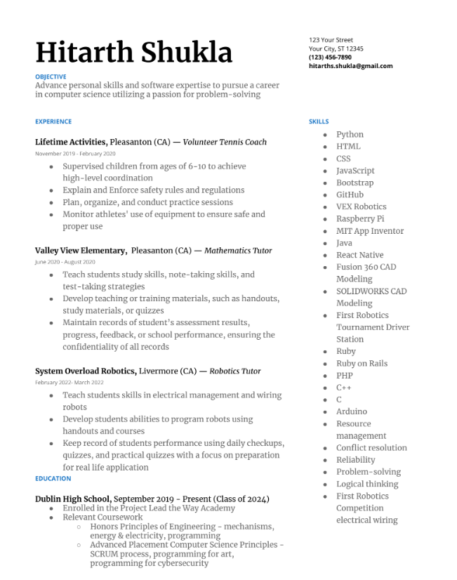

Please click here for a PDF link to my Resume

To pursue my passion for the field of computer science I have gained work experience and skills to better be prepared to go into the industry with the knowledge necessary to strive in it. Some skills directly related to computer science I have gained is knowledge in several programming languages. I have learned certain languages such as HTML, CSS, JavaScript and Bootstrap to help design websites and other front end platforms. I have also invested my time into learning React Native, Ruby, Ruby on Rails, and PHP to build applications which can be used on your cellular devices. And to further my interest, I have learned C, C++, and Java to program robots to understand the correlation between robotics and software.
Alongside learning skills directly related to software engineering, I have also taken up job opportunities to further my skills to be more prepared for the industry. A notable one was volunteering as a Tennis coach. Tennis coaches have many skills that are used in the software field such as being able to problem solve and manage recourses. As a coach only a certain amount of recourses are given to you, such as a time limit and equipment limit pertaining to how much time you can spend coaching certain techniques as well as the constraint of not having an unlimited amount of training equipment to develop certain techniques. And just like a software engineer, problem solving and recourse management would have to be used to gain the highest benefits for the athletes as possible.
Another job venture that has taught me valuable skills software engineers use is being a volunteer mathematics tutor. Certain skills skills such as reliability, logical thinking, and conflict resolution are all shared skills between both fields. Due to the young age of the children I tutored, conflict resolution had to be used to deescalate unfortunate situations and to keep everyone composed as possible during emergency's. The children also needed to be tutored, which meant I had to be held accountable and be a reliable source to ask questions, dismiss concerns, and to communicate with if a problem had occurred, which has taught me to be reliable if people count on me to do something. Logical thinking also had to be used to help aid in the understanding of difficult concepts for the children, this meant making diagrams on the fly and being able to explain concepts as simple as possible to avoid confusion and help the children succeed at that topic.
I also wanted to apply the skills I have learned and teach others about my passion. So I mentored a group of young students in the First Robotics program partnered with System Overload Robotics. I have taught these students applicable skills related to electrical engineering which included, explaining the layout of an electrical circuit and showing them how to wire these electricals by using crimping and soldering skills. Another job I had to fulfill was educating these kids on how software works with each electrical subsystem by using my knowledge in the Java programming language to educate children on the effects software has on electricals. All these experiences and skills have been cultivated to help pursue my career as a software engineer.